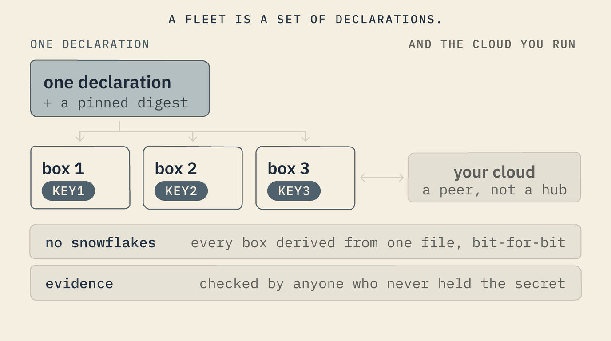
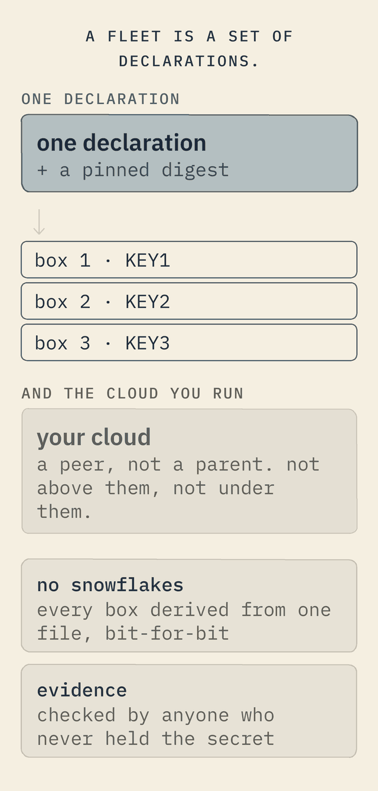

For enterprise IT
Secure, scalable, and made to fit what you already run.
The three questions an IT team asks — is it secure, does it scale, will it integrate — answered from the same design, and honest about what is still a direction today.
Adopting an operating system is an enterprise decision, and three questions decide it. Each answer follows from the same design — and where an answer is still a direction rather than a fact today, this site says so.


Security
- A small attack surface, and a named one. Nothing runs that the file did not declare: no shell, no package manager, no store, no login. What is left to attack is the kernel and the programs you declared — and only they ever listen.
- Least privilege, where the kernel can hold it. A machine whose programs need what nobody granted is refused before it is built. While it runs, the kernel gives each program only the network and the disks it declared, lets it start another program only if it said so, and refuses every program 25 calls that would change the machine itself — rebooting it, loading code into the kernel, moving its clock.
- Rebuilt at every boot. The system runs from an image in memory, made again from the file each time the machine starts: what a program changes there is gone at the next boot, and only the disks you declared keep anything. No drift, no undocumented change to find.
- Tamper-evident audit. A signed boot record and a per-device key: evidence an auditor reads directly.
Scalability
- A fleet is a set of declarations. Run one box or a thousand with the same discipline; one image rolls out to many.
- No snowflakes. Every box is built from one text file and a kernel source fixed by its fingerprint, so a thousand boxes are a thousand builds of one description — not a thousand configurations drifting apart.
- Federated, not fragile. Local-first nodes that synchronise, rather than one central server everything leans on — scale out across sites, each sovereign.
- Not a cloud replacement — cloud-friendly. Sovereign nodes at the edge that integrate with the cloud you already run, and the same declared machine can run in the cloud too. Enterprise-cloud, made easy.
Integration
- Standard wire, proven substrate. It's Linux underneath: the same TCP/IP, HTTP, TLS and DNS as the rest of your estate — no exotic protocol to bridge.
- Every connection is declared. A link to a database, an identity provider or a message bus is a declared reach and a service — visible and auditable, and once a machine declares its reach, it knows no route to anywhere else.
- Joins your identity. The application server can front standard sign-in (OIDC), so it fits your directory rather than inventing its own.
- Bridges to the centre. Local-first data federates between sites and syncs to central systems on the terms you declare.
In an ordinary OS, security, scale and integration are things you bolt on and hope for. Here they are properties of a declaration you can read — and a court can check.